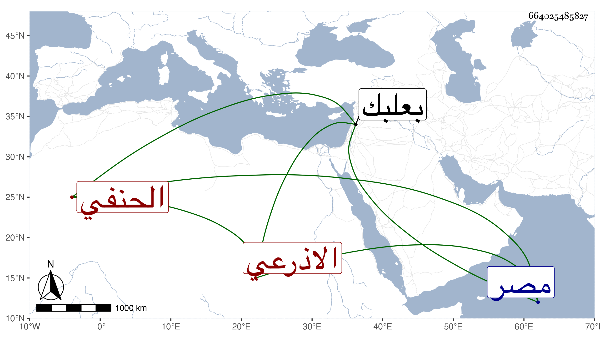

0902Sakhawi.DawLamic.ITO20230111-ara1.EIS1600.664025485827
Biography ID: 664025485827
1033
محمد بن أحمد بن سليمان الشمس الاذرعي الحنفي . أخذ عن ابن الرضى والبدر المقدسي ثم تحول بعد الفتنة شافعيا وولى قضاء بعلبك وغيرها ثم رجع إلى مذهبه الأول ، وناب في الحكم ودرس وأفتى وكانت كتابته على الفتاوى حسنة وخطه جيدا وكذا قراءته في البخاري ونحوه ، توجه إلى مصر في آخر عمره فلم يلبث أن مات بها مطعونا غريبا في جمادى الآخرة سنة ثلاث وثلاثين رحمه الله وعفا عنه .
